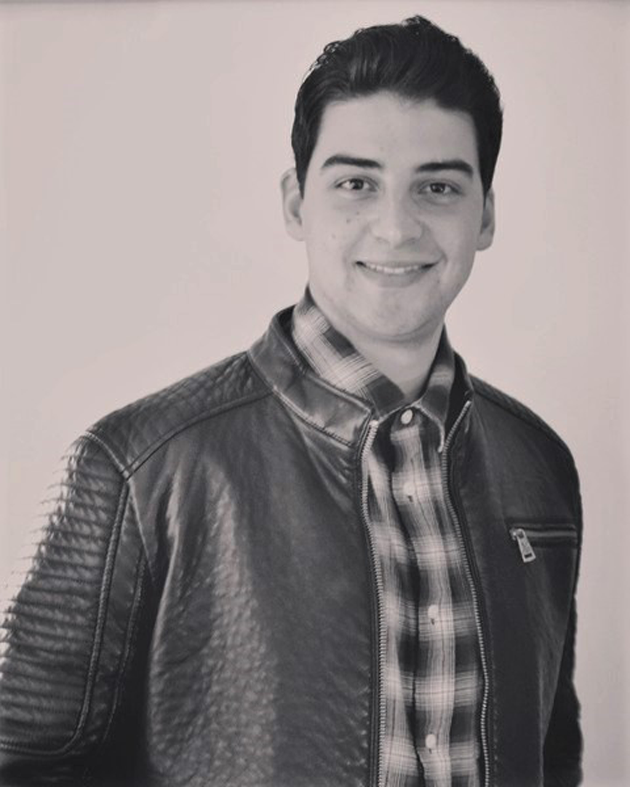

About me
I Bernard Abels was born on december 30 in 1989 in Duesseldorf Germany.
I graduated as Signmaker and studied later 3D-Animation and Visual Effects in Cologne.
During a 15 months intensiv program I learned to work with Maya Autodesk and how to create digital Art.
In 2017 I play-acted a Paparazzi in a Trailer for Dmax/Discovery ´s "Goldtimer Wertanlage mit PS" with Alexander Wesselsky.
My favorite City in the World is Los Angeles.